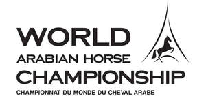
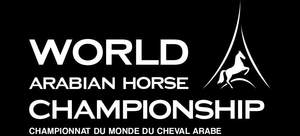

Trade Mark Journal No.2025/017 25 April 2025
UK00004187215 10 April 2025 (35,41)
Mark 1

Mark 2

- Class 35
- Administrative management of exhibition facilities for the organisation of exhibitions, trade fairs, forums and trade shows, colloquiums, conferences and congresses; organisation of exhibitions, shows, trade fairs, and events of all kinds for commercial or advertising purposes; organisation of competitions for promotional purposes with or without the awarding of prizes or bestowing of awards, in particular in the field of shows, colloquiums, conferences, congresses, exhibitions, trade fairs; administrative management of exhibition sites; organisation of business meetings in the field of shows, colloquiums, conferences, congresses, exhibitions, trade fairs, namely bringing together exhibitors and visitors for the holding of business meetings; dissemination and distribution of advertising matter (pamphlets, prospectuses, printed matter, samples); sales promotion for others; marketing; presentation and demonstration of goods and services for promotional purposes; commercial intermediation services; preparation and compilation of business and commercial statistics in connection with exhibitions, in particular relating to the organisation of exhibitions; advertising; mail advertising, radio and television advertising; online advertising on a computer network; publicity columns preparation; rental of advertising time on all means of communication; rental of advertising space; dissemination of advertising matter and classified advertisements, in particular for employment, including via the internet; organisation of promotional activities to obtain customer loyalty; organisation of regional and national promotional campaigns; arranging newspaper subscriptions for others; arranging subscriptions for others to all information, text, audio and/or visual media, and in particular in the form of electronic and digital publications; market studies, market research; public relations services; compilation of information into computer databases; systemization of information into computer databases; computerised file management; business management; business administration; publication of publicity texts and/or images; opinion polling.
- Class 41
- Teaching; training; entertainment services; conducting of cultural activities; publication of books, journals and texts (other than publicity texts); organization of lotteries; arranging exhibitions, trade fairs, shows and all kinds of events for cultural or educational purposes; providing recreation facilities; arranging and conducting of conferences, congresses, colloquiums, seminars, symposiums; production and rental of films, short films, documentaries, and radio or television magazines; production of radio- and tv-programmes; videotape editing; rental of sound recordings; hire of televisions; education and entertainment information; information in the field of exhibitions and in particular relating to organisation of exhibitions; organisation and production of shows; lease of scenery; reservation services for show tickets; box office services; conducting of professional clubs [entertainment] relating to shows, colloquiums, conferences, congresses, exhibitions, trade fairs; organisation of competitions relating to education, entertainment, with or without the awarding of prizes or bestowing of awards, in particular in the field of shows, colloquiums, conferences, congresses, exhibitions, trade fairs; professional retraining; photography; publication of printed matter, newspapers, magazines, journals, periodicals, books, cards, manuals, albums, catalogues and brochures, on media of all kinds, including electronic media; publication of texts (other than publicity texts) on all media; online publication of electronic books and journals; micropublishing; lending library services; planning and organisation of receptions (entertainment); providing electronic publications; game services provided online from a computer network; gaming.
CENTRE NATIONAL DES EXPOSITIONS ET CONCOURS AGRICOLES – CENECA
Representative: Wynne-Jones IP Limited